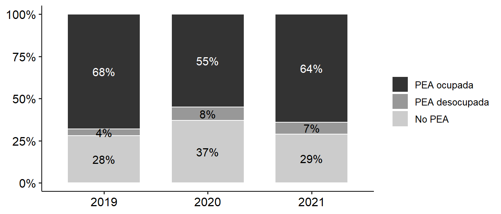
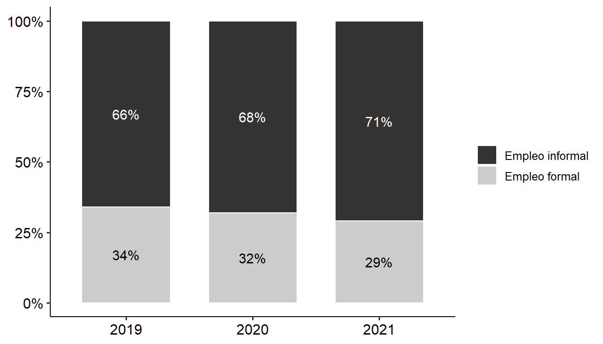
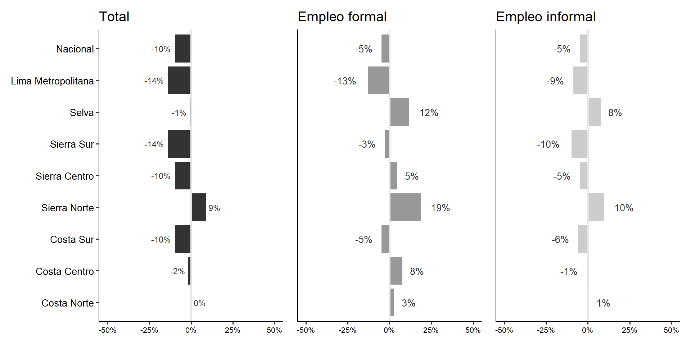
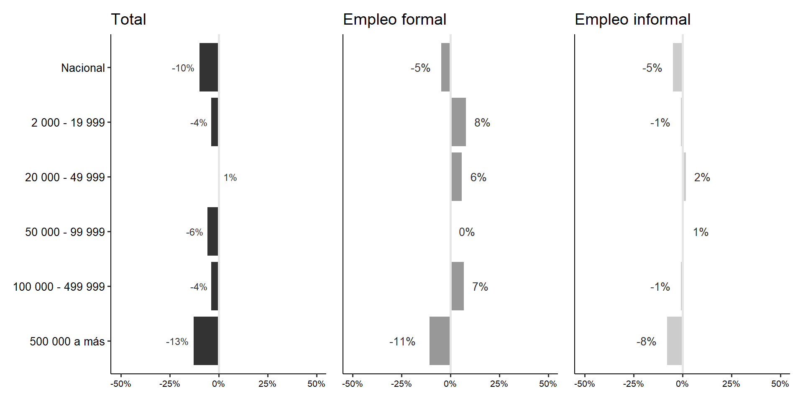
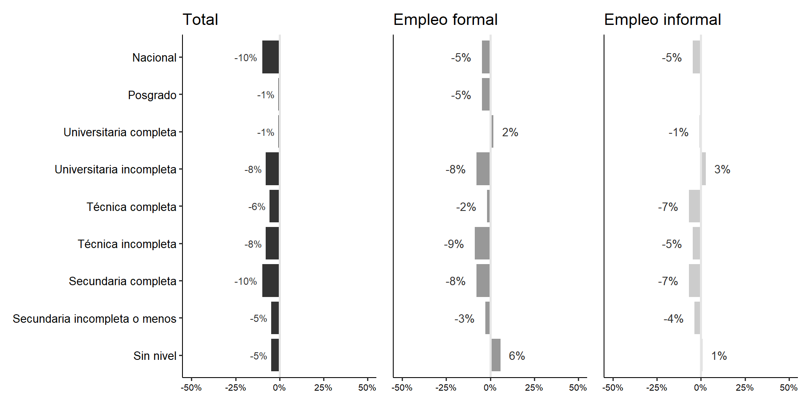
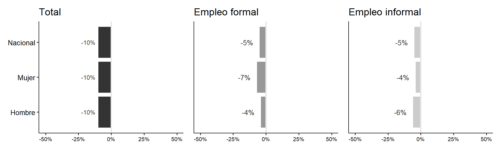
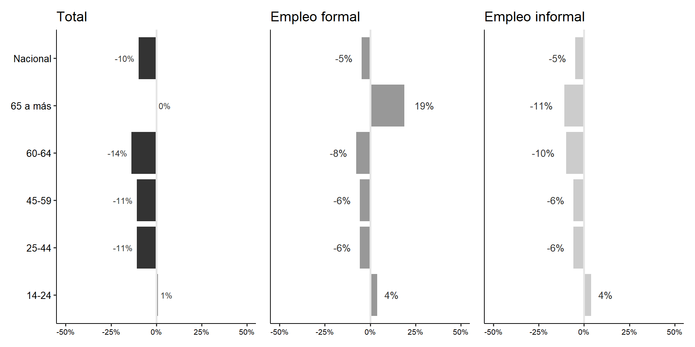
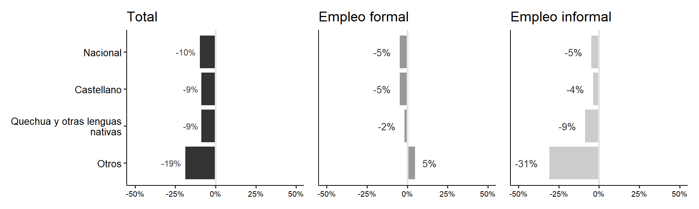
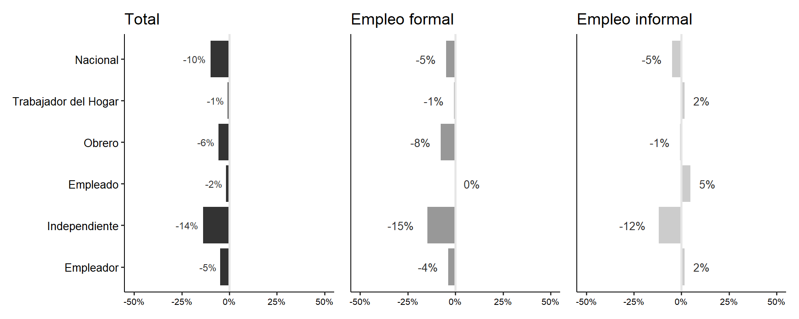
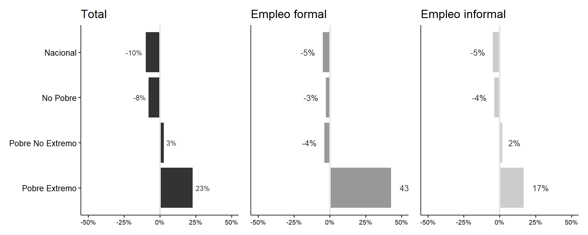

![]()
Parte 1: PEA OCUPADA URBANA
- Se observa una reducción de la PEA ocupada en 2020 en 10 puntos porcentuales en comparación al 2019.
- En el 2020, aumentó en 6% el número de personas que no buscaban trabajo (NO PEA).
- Si bien la PEA ocupada tuvo una disminución de 10% en 2020, se observa una recuperación hacia 2021. Sin embargo, no ha regresado al nivel prepandemia.
- Un aumento de la PEA deoscupada en 2020 y sobre todo de la No Pea, aquellos que no buscan trabajo.
- La No PEA en el 2021 regresó a los niveles del 2019, es decir, 27%.

- Tabla 1 muestra que hubo una disminución importante de la PEA ocupada urbana en 2020 seguido de una recuperación en 2021 cercana a niveles prepandemia.
- Se observa una disminución importante en Lima Metropolitana que perdió más de un millón de trabajadores hacia el 2020.
- Las ciudades más afectadas han sido las ciudades intermedias y las grandes ciudades, las cuales han perdido más de un millón de trabajadores entre 2019 y 2020. Las ciudades intermedias han tenido una recuperación más lenta.
Variable |
2019 |
2020 |
2021 |
Total en miles (%) |
Total en miles (%) |
Total en miles (%) |
|
Nacional |
13,360 (100.00%) |
11,172 (100.00%) |
13,229 (100.00%) |
Dominio Geográfico |
|||
Costa Norte |
2,240 (16.77%) |
1,885 (16.87%) |
2,212 (16.72%) |
Costa Centro |
1,051 (7.87%) |
873 (7.81%) |
1,027 (7.77%) |
Costa Sur |
310 (2.32%) |
257 (2.30%) |
315 (2.38%) |
Sierra Norte |
334 (2.50%) |
296 (2.65%) |
369 (2.79%) |
Sierra Centro |
1,067 (7.99%) |
931 (8.33%) |
1,084 (8.19%) |
Sierra Sur |
1,540 (11.53%) |
1,345 (12.04%) |
1,611 (12.18%) |
Selva |
1,425 (10.66%) |
1,355 (12.13%) |
1,540 (11.64%) |
Lima Metropolitana |
5,393 (40.36%) |
4,231 (37.87%) |
5,071 (38.33%) |
Estrato Geográfico |
|||
De 500 000 a más habitantes |
6,336 (47.42%) |
4,973 (44.52%) |
6,066 (45.86%) |
De 100 000 a 499 999 habitantes |
2,680 (20.06%) |
2,223 (19.90%) |
2,332 (17.63%) |
De 50 000 a 99 999 habitantes |
779 (5.83%) |
607 (5.43%) |
787 (5.95%) |
De 20 000 a 49 999 habitantes |
1,216 (9.10%) |
1,055 (9.44%) |
1,228 (9.29%) |
De 2 000 a 19 999 habitantes |
2,349 (17.58%) |
2,314 (20.71%) |
2,816 (21.29%) |
- Tabla 2 muestra que hubo una reducción mayor de la fuerza laboral femenina entre 2019 y 2020 superando un millón doscientos mil empleos perdidos (alrededor de la población del Callao).
- La fuerza laboral masculina también experimentó una caída en 2020; sin embargo, se observa una recuperación en términos del tamaño que supera a la dimensión del 2019.
- Los trabajadores menores 44 años han sido los más afectados, en especial los que tienen entre 35 y 44 años.
- Además se observa que hacia el 2021, los trabajadores entre 55 y 64 años no habían recuperado su tamaño a niveles prepandemia.
- Los trabajadores con únicamente educación secundaria o menos fueron los más afectados durante la pandemia; no obstante, se observa una recuperación hacia 2021.
- La pandemia afectó sobre todo a los trabajadores que se consideraban no pobres llegando a reducirse la fuerza laboral en dos millones hacia el 2020. Este grupo no se ha recuperado a niveles prepandemia hacia 2021.
Variable |
2019 |
2020 |
2021 |
Total en miles (%) |
Total en miles (%) |
Total en miles (%) |
|
Nacional |
13,360 (100.00%) |
11,172 (100.00%) |
13,229 (100.00%) |
Sexo |
|||
Hombre |
7,364 (55.12%) |
6,421 (57.48%) |
7,405 (55.97%) |
Mujer |
5,996 (44.88%) |
4,750 (42.52%) |
5,825 (44.03%) |
Grupos de edad |
|||
14 a 24 años |
2,095 (15.68%) |
1,658 (14.84%) |
2,079 (15.72%) |
25 a 44 años |
6,442 (48.21%) |
5,445 (48.74%) |
6,421 (48.53%) |
45 a 59 años |
3,318 (24.83%) |
2,922 (26.15%) |
3,400 (25.70%) |
De 60 a 64 años |
767 (5.74%) |
546 (4.89%) |
630 (4.76%) |
65 años a más |
739 (5.53%) |
601 (5.38%) |
699 (5.29%) |
Variable |
2019 |
2020 |
2021 |
Total en miles (%) |
Total en miles (%) |
Total en miles (%) |
|
Nacional |
13,360 (100.00%) |
11,172 (100.00%) |
13,229 (100.00%) |
Nivel educativo |
|||
Sin nivel |
225 (1.68%) |
171 (1.54%) |
205 (1.55%) |
Educación secundaria incompleta o menos |
3,564 (26.68%) |
3,060 (27.39%) |
3,711 (28.05%) |
Educación secundaria completa |
4,177 (31.27%) |
3,622 (32.43%) |
4,434 (33.51%) |
Educación técnica incompleta |
787 (5.89%) |
671 (6.00%) |
823 (6.22%) |
Educación técnica completa |
1,687 (12.63%) |
1,376 (12.32%) |
1,542 (11.66%) |
Educación universitaria incompleta |
1,004 (7.51%) |
739 (6.62%) |
897 (6.78%) |
Educación universitaria completa |
1,563 (11.70%) |
1,279 (11.45%) |
1,366 (10.32%) |
Posgrado |
353 (2.64%) |
253 (2.27%) |
251 (1.90%) |
Pobreza |
|||
Pobre Extremo |
82 (0.62%) |
196 (1.75%) |
194 (1.46%) |
Pobre No Extremo |
1,465 (10.97%) |
1,984 (17.76%) |
2,128 (16.09%) |
No Pobre |
11,813 (88.42%) |
8,992 (80.49%) |
10,907 (82.45%) |
- Tabla 4 entre los grupos más numerosos se encuentran trabajadores independientes, empleados y obreros. Entre ellos, los empleados hacia el 2021 no se ha recuperado de su situación prepandemia habiendo perdido 500 mil trabajadores entre 2019 y 2021.
- Tanto el empleo informal como el formal se redujeron en 2020. El empleo informal ha aumentado en 603 mil trabajadores entre 2019 y 2021.
Variable |
2019 |
2020 |
2021 |
Total en miles (%) |
Total en miles (%) |
Total en miles (%) |
|
Nacional |
13,360 (100.00%) |
11,172 (100.00%) |
13,229 (100.00%) |
Posición en ocupación principal o negocio |
|||
Empleador o patrono |
570 (4.27%) |
345 (3.09%) |
465 (3.51%) |
Trabajador Independiente |
4,563 (34.16%) |
4,005 (35.85%) |
4,767 (36.03%) |
Empleado |
4,065 (30.42%) |
3,056 (27.35%) |
3,479 (26.29%) |
Obrero |
2,968 (22.21%) |
2,677 (23.96%) |
3,327 (25.15%) |
Trabajador Familiar No Remunerado |
774 (5.79%) |
830 (7.43%) |
833 (6.30%) |
Trabajador del Hogar |
397 (2.97%) |
231 (2.07%) |
330 (2.50%) |
Otro |
23 (0.18%) |
27 (0.24%) |
30 (0.22%) |
Situación de informalidad (ocup.principal) |
|||
Empleo informal |
8,872 (66.40%) |
7,643 (68.42%) |
9,446 (71.41%) |
Empleo formal |
4,489 (33.60%) |
3,528 (31.58%) |
3,783 (28.59%) |
Parte 2: CAMBIOS EN LOS NIVELES DE INFORMALIDAD
- En la Figura 2 podemos observar que el empleo informal ha aumentado de manera constante entre 2019 y 2021 dentro de la PEA ocupada urbana.

- Tabla 5 muestra que hacia el 2021 ha aumentado el empleo informal en todos los dominios geográficos, especialmente en la Selva, Sierra Centro, y Costa Sur.
Variable |
2019 |
2020 |
2021 |
|||
Empleo informal |
Empleo formal |
Empleo informal |
Empleo formal |
Empleo informal |
Empleo formal |
|
Nacional |
66.40% |
33.60% |
68.42% |
31.58% |
71.41% |
28.59% |
Dominio Geográfico |
||||||
Costa Norte |
72.53% |
27.47% |
72.42% |
27.58% |
74.56% |
25.44% |
Costa Centro |
67.01% |
32.99% |
68.91% |
31.09% |
72.46% |
27.54% |
Costa Sur |
68.12% |
31.88% |
67.92% |
32.08% |
73.02% |
26.98% |
Sierra Norte |
68.42% |
31.58% |
73.06% |
26.94% |
72.91% |
27.09% |
Sierra Centro |
73.02% |
26.98% |
75.78% |
24.22% |
80.20% |
19.80% |
Sierra Sur |
70.32% |
29.68% |
75.50% |
24.50% |
77.62% |
22.38% |
Selva |
75.82% |
24.18% |
81.39% |
18.61% |
83.78% |
16.22% |
Lima Metropolitana |
58.60% |
41.40% |
58.22% |
41.78% |
61.99% |
38.01% |
- Tabla 6 muestra que hacia el 2021 ha aumentado el empleo informal principalmente en las ciudades intermedias de entre 50 000 y 499 999 habitantes.
Variable |
2019 |
2020 |
2021 |
|||
Empleo informal |
Empleo formal |
Empleo informal |
Empleo formal |
Empleo informal |
Empleo formal |
|
Nacional |
66.40% |
33.60% |
68.42% |
31.58% |
71.41% |
28.59% |
Estrato Geográfico |
||||||
De 500 000 a más habitantes |
59.33% |
40.67% |
58.66% |
41.34% |
62.96% |
37.04% |
De 100 000 a 499 999 habitantes |
68.31% |
31.69% |
71.41% |
28.59% |
74.75% |
25.25% |
De 50 000 a 99 999 habitantes |
69.71% |
30.29% |
73.73% |
26.27% |
75.64% |
24.36% |
De 20 000 a 49 999 habitantes |
74.31% |
25.69% |
76.15% |
23.85% |
76.55% |
23.45% |
De 2 000 a 19 999 habitantes |
78.12% |
21.88% |
81.60% |
18.40% |
83.40% |
16.60% |
- Tabla 7 muestra que hacia el 2021, dentro de los trabajadores jefes de hogar, si bien hay una predominancia de mujeres en el empleo informal, ha habido un mayor aumento de los hombres con 5% aprox.
Variable |
2019 |
2020 |
2021 |
|||
Empleo informal |
Empleo formal |
Empleo informal |
Empleo formal |
Empleo informal |
Empleo formal |
|
Nacional |
62.98% |
37.02% |
66.17% |
33.83% |
68.45% |
31.55% |
Sexo |
||||||
Hombre |
60.09% |
39.91% |
63.52% |
36.48% |
65.98% |
34.02% |
Mujer |
70.73% |
29.27% |
73.07% |
26.93% |
73.92% |
26.08% |
- Tabla 8 muestra que hacia el 2021, dentro de los trabajadores jefes de hogar, ha aumentado en el empleo informal los trabajadores entre 55 y 64 años principalmente seguido de los trabajadores entre 35 y 44 años.
Variable |
2019 |
2020 |
2021 |
|||
Empleo informal |
Empleo formal |
Empleo informal |
Empleo formal |
Empleo informal |
Empleo formal |
|
Nacional |
62.98% |
37.02% |
66.17% |
33.83% |
68.45% |
31.55% |
Grupos de edad |
||||||
14 a 24 años |
80.93% |
19.07% |
81.86% |
18.14% |
84.05% |
15.95% |
25 a 44 años |
62.73% |
37.27% |
67.26% |
32.74% |
68.34% |
31.66% |
45 a 59 años |
58.30% |
41.70% |
61.78% |
38.22% |
64.65% |
35.35% |
De 60 a 64 años |
61.77% |
38.23% |
63.64% |
36.36% |
68.86% |
31.14% |
65 años a más |
78.89% |
21.11% |
78.30% |
21.70% |
80.09% |
19.91% |
- Tabla 9 muestra que hacia el 2021, dentro de los trabajadores jefes de hogar, ha aumentado en el empleo informal principalmente a los trabajadores con educación universitaria incompleta y los que contaban con secundaria completa como máximo nivel alcanzado.
Variable |
2019 |
2020 |
2021 |
|||
Empleo informal |
Empleo formal |
Empleo informal |
Empleo formal |
Empleo informal |
Empleo formal |
|
Nacional |
62.98% |
37.02% |
66.17% |
33.83% |
68.45% |
31.55% |
Nivel educativo |
||||||
Sin nivel |
92.71% |
7.29% |
93.52% |
6.48% |
95.58% |
4.42% |
Educación secundaria incompleta o menos |
86.14% |
13.86% |
86.91% |
13.09% |
88.68% |
11.32% |
Educación secundaria completa |
66.49% |
33.51% |
71.54% |
28.46% |
72.47% |
27.53% |
Educación técnica incompleta |
57.83% |
42.17% |
61.60% |
38.40% |
62.50% |
37.50% |
Educación técnica completa |
39.25% |
60.75% |
38.92% |
61.08% |
42.80% |
57.20% |
Educación universitaria incompleta |
51.07% |
48.93% |
58.63% |
41.37% |
58.55% |
41.45% |
Educación universitaria completa |
25.03% |
74.97% |
24.89% |
75.11% |
26.88% |
73.12% |
Posgrado |
9.06% |
90.94% |
8.12% |
91.88% |
8.14% |
91.86% |
- Tabla 10 muestra que hacia el 2021, los trabajadores de lengua materna castellano han aumentado en el empleo informal en un 5% aprox.
Variable |
2019 |
2020 |
2021 |
|||
Empleo informal |
Empleo formal |
Empleo informal |
Empleo formal |
Empleo informal |
Empleo formal |
|
Nacional |
66.40% |
33.60% |
68.42% |
31.58% |
71.41% |
28.59% |
Lengua materna |
||||||
Castellano |
64.60% |
35.40% |
66.01% |
33.99% |
69.80% |
30.20% |
Quechua y otras lenguas nativas |
80.10% |
19.90% |
81.74% |
18.26% |
82.45% |
17.55% |
Otros |
60.12% |
39.88% |
82.54% |
17.46% |
70.81% |
29.19% |
- Tabla 11 muestra que hacia el 2021, los trabajadores empleadores y obreros han aumentado en el empleo informal. Cabe destacar que trabajadores familiares no remunerados y otros están presentes únicamente en el empleo informal.
Variable |
2019 |
2020 |
2021 |
|||
Empleo informal |
Empleo formal |
Empleo informal |
Empleo formal |
Empleo informal |
Empleo formal |
|
Nacional |
66.40% |
33.60% |
68.42% |
31.58% |
71.41% |
28.59% |
Posición en ocupación principal o negocio |
||||||
Empleador o patrono |
45.73% |
54.27% |
47.22% |
52.78% |
50.81% |
49.19% |
Trabajador Independiente |
85.44% |
14.56% |
87.42% |
12.58% |
87.96% |
12.04% |
Empleado |
36.68% |
63.32% |
34.02% |
65.98% |
39.84% |
60.16% |
Obrero |
69.88% |
30.12% |
70.34% |
29.66% |
74.12% |
25.88% |
Trabajador Familiar No Remunerado |
100.00% |
0.00% |
100.00% |
0.00% |
100.00% |
0.00% |
Trabajador del Hogar |
88.03% |
11.97% |
86.29% |
13.71% |
91.87% |
8.13% |
Otro |
100.00% |
0.00% |
100.00% |
0.00% |
100.00% |
0.00% |
- Tabla 12 muestra que hacia el 2021, los trabajadores no pobres aumentaron en el empleo informal con cerca de 5%.
Variable |
2019 |
2020 |
2021 |
|||
Empleo informal |
Empleo formal |
Empleo informal |
Empleo formal |
Empleo informal |
Empleo formal |
|
Nacional |
66.40% |
33.60% |
68.42% |
31.58% |
71.41% |
28.59% |
Pobreza |
||||||
Pobre Extremo |
98.97% |
1.03% |
94.30% |
5.70% |
94.16% |
5.84% |
Pobre No Extremo |
89.92% |
10.08% |
86.57% |
13.43% |
86.95% |
13.05% |
No Pobre |
63.81% |
36.19% |
64.26% |
35.74% |
68.46% |
31.54% |
Parte 3: INFORMALIDAD Y CONDICIONES DE VIDA: INGRESO
Acá recién aplicar ingtra_n > 0
Durante la pandemia, se observa una caída en los ingresos, especialmente en 2020, la cual no se ha recuperado del todo en 2021. Se observa una mayor caída en el empleo informal con una disminución de s/. 122 hacia el 2021.

Asimismo, la Tabla 13 y Figura 4 nos muestran que en Lima Metropolitana existe una fuerte caída en los ingresos principalmente dentro de los trabajadores formales. Por otro lado, se ve una disminución en los ingresos en la Sierra Sur de s/.218.
Variable |
2019 |
2020 |
2021 |
||||||
Total |
Empleo informal |
Empleo formal |
Total |
Empleo informal |
Empleo formal |
Total |
Empleo informal |
Empleo formal |
|
Nacional |
1,595 |
1,037 |
2,599 |
1,407 |
901 |
2,380 |
1,443 |
989 |
2,473 |
Dominio Geográfico |
|||||||||
Costa Norte |
1,302 |
941 |
2,198 |
1,167 |
811 |
2,035 |
1,303 |
947 |
2,273 |
Costa Centro |
1,398 |
1,033 |
2,072 |
1,317 |
962 |
2,051 |
1,376 |
1,022 |
2,243 |
Costa Sur |
1,560 |
1,071 |
2,518 |
1,390 |
918 |
2,317 |
1,401 |
1,008 |
2,397 |
Sierra Norte |
1,437 |
763 |
2,718 |
1,332 |
713 |
2,769 |
1,568 |
840 |
3,222 |
Sierra Centro |
1,339 |
845 |
2,454 |
1,276 |
706 |
2,694 |
1,209 |
804 |
2,588 |
Sierra Sur |
1,475 |
977 |
2,505 |
1,256 |
835 |
2,290 |
1,273 |
879 |
2,433 |
Selva |
1,326 |
909 |
2,465 |
1,182 |
850 |
2,409 |
1,308 |
986 |
2,753 |
Lima Metropolitana |
1,910 |
1,206 |
2,847 |
1,671 |
1,041 |
2,491 |
1,643 |
1,098 |
2,488 |

La Tabla 14 y Figura 5 nos muestran que en las ciudades grandes (de 500 000 a más habitantes) han tenido una fuerte disminución en sus ingresos de hasta s/.230. Esto se ha enfatizado más en los trabajadores formales quienes han visto sus ingresos reducidos hasta en s/.313.
Variable |
2019 |
2020 |
2021 |
||||||
Total |
Empleo informal |
Empleo formal |
Total |
Empleo informal |
Empleo formal |
Total |
Empleo informal |
Empleo formal |
|
Nacional |
1,595 |
1,037 |
2,599 |
1,407 |
901 |
2,380 |
1,443 |
989 |
2,473 |
Estrato Geográfico |
|||||||||
De 500 000 a más habitantes |
1,869 |
1,190 |
2,798 |
1,641 |
1,025 |
2,455 |
1,623 |
1,091 |
2,478 |
De 100 000 a 499 999 habitantes |
1,438 |
959 |
2,375 |
1,310 |
887 |
2,259 |
1,382 |
954 |
2,538 |
De 50 000 a 99 999 habitantes |
1,462 |
1,007 |
2,417 |
1,275 |
872 |
2,288 |
1,381 |
1,015 |
2,412 |
De 20 000 a 49 999 habitantes |
1,299 |
911 |
2,297 |
1,161 |
806 |
2,163 |
1,311 |
932 |
2,426 |
De 2 000 a 19 999 habitantes |
1,192 |
853 |
2,234 |
1,098 |
742 |
2,364 |
1,148 |
846 |
2,420 |

La Tabla 15 y Figura 6 nos muestran que los ingresos de los trabajadores con educación secundaria completa y educación técnica incompleta se redujeron significativamente principalmente dentro de los trabajadores formales entre s/.167 y s/.184.
Variable |
2019 |
2020 |
2021 |
||||||
Total |
Empleo informal |
Empleo formal |
Total |
Empleo informal |
Empleo formal |
Total |
Empleo informal |
Empleo formal |
|
Nacional |
1,595 |
1,037 |
2,599 |
1,407 |
901 |
2,380 |
1,443 |
989 |
2,473 |
Nivel educativo |
|||||||||
Sin nivel |
597 |
520 |
1,610 |
586 |
533 |
1,544 |
569 |
527 |
1,709 |
Educación secundaria incompleta o menos |
1,021 |
906 |
1,812 |
858 |
761 |
1,573 |
965 |
868 |
1,753 |
Educación secundaria completa |
1,367 |
1,085 |
2,068 |
1,164 |
921 |
1,833 |
1,224 |
1,011 |
1,902 |
Educación técnica incompleta |
1,356 |
998 |
2,061 |
1,282 |
873 |
2,086 |
1,245 |
951 |
1,876 |
Educación técnica completa |
1,789 |
1,162 |
2,291 |
1,635 |
983 |
2,131 |
1,681 |
1,075 |
2,254 |
Educación universitaria incompleta |
1,487 |
969 |
2,228 |
1,349 |
948 |
2,043 |
1,370 |
997 |
2,054 |
Educación universitaria completa |
2,768 |
1,531 |
3,287 |
2,592 |
1,436 |
3,085 |
2,729 |
1,510 |
3,350 |
Posgrado |
4,778 |
2,986 |
4,999 |
4,449 |
4,474 |
4,447 |
4,708 |
4,550 |
4,725 |

La Tabla 16 y Figura 7 nos muestran que en general los trabajadores hombres han tenido una mayor reducción en sus ingresos entre 2019 y 2021 cercana a los s/.180. Más aún, las mujeres en el empleo formal vieron sus ingresos más reducidos (alrededor de s/.160) a diferencia de los hombres que se vieron más afectados en el empleo informal.
Variable |
2019 |
2020 |
2021 |
||||||
Total |
Empleo informal |
Empleo formal |
Total |
Empleo informal |
Empleo formal |
Total |
Empleo informal |
Empleo formal |
|
Nacional |
1,595 |
1,037 |
2,599 |
1,407 |
901 |
2,380 |
1,443 |
989 |
2,473 |
Sexo |
|||||||||
Hombre |
1,819 |
1,225 |
2,778 |
1,549 |
1,018 |
2,527 |
1,639 |
1,150 |
2,680 |
Mujer |
1,308 |
816 |
2,327 |
1,203 |
739 |
2,154 |
1,183 |
784 |
2,168 |

La Tabla 17 y Figura 8 nos muestran que, en líneas generales, los trabajadores de 55 a 64 años vieron sus ingresos más comprometidos en especial aquellos que contaban con un empleo formal. De similar manera, los trabajadores entre 35 y 44 años vieron sus ingresos reducidos principalmente los trabajadores formales. Cabe destacar, una ligera recuperación de los ingresos en los trabajadores de 24 años a menos.
Variable |
2019 |
2020 |
2021 |
||||||
Total |
Empleo informal |
Empleo formal |
Total |
Empleo informal |
Empleo formal |
Total |
Empleo informal |
Empleo formal |
|
Nacional |
1,595 |
1,037 |
2,599 |
1,407 |
901 |
2,380 |
1,443 |
989 |
2,473 |
Grupos de edad |
|||||||||
14 a 24 años |
960 |
819 |
1,516 |
924 |
763 |
1,551 |
965 |
848 |
1,583 |
25 a 44 años |
1,730 |
1,155 |
2,628 |
1,463 |
971 |
2,332 |
1,543 |
1,080 |
2,462 |
45 a 59 años |
1,793 |
1,085 |
2,837 |
1,599 |
950 |
2,617 |
1,595 |
1,024 |
2,669 |
De 60 a 64 años |
1,644 |
935 |
2,838 |
1,386 |
761 |
2,427 |
1,413 |
844 |
2,601 |
65 años a más |
1,015 |
693 |
2,183 |
1,088 |
605 |
2,763 |
1,010 |
618 |
2,590 |

La Tabla 18 y Figura 9 nos muestran que, en líneas generales, los trabajadores de habla castellana vieron sus ingresos reducidos aproximadamente en s/.150. El sector de la población de lengua materna “Otros”, que tiene sobre todo lenguas extranjeras, ha visto sus ingresos reducidos en s/.421.
Variable |
2019 |
2020 |
2021 |
||||||
Total |
Empleo informal |
Empleo formal |
Total |
Empleo informal |
Empleo formal |
Total |
Empleo informal |
Empleo formal |
|
Nacional |
1,595 |
1,037 |
2,599 |
1,407 |
901 |
2,380 |
1,443 |
989 |
2,473 |
Lengua materna |
|||||||||
Castellano |
1,645 |
1,050 |
2,627 |
1,453 |
911 |
2,398 |
1,493 |
1,011 |
2,496 |
Quechua y otras lenguas nativas |
1,255 |
966 |
2,264 |
1,131 |
839 |
2,201 |
1,143 |
875 |
2,216 |
Otros |
2,050 |
1,410 |
2,918 |
1,610 |
1,399 |
2,416 |
1,657 |
970 |
3,062 |

La Tabla 19 y Figura 10 nos muestran que, los trabajadores formales independientes fueron los más afectados con una reducción de ingresos de s/.271. Seguido a ellos, los obreros formales vieron una reducción de s/.163. Cabe mencionar que Se filtraron a los trabajadores familiares no remunerados y otros dado que no contaban con ingresos.
Variable |
2019 |
2020 |
2021 |
||||||
Total |
Empleo informal |
Empleo formal |
Total |
Empleo informal |
Empleo formal |
Total |
Empleo informal |
Empleo formal |
|
Nacional |
1,595 |
1,037 |
2,599 |
1,407 |
901 |
2,380 |
1,443 |
989 |
2,473 |
Posición en ocupación principal o negocio |
|||||||||
Empleador o patrono |
2,801 |
1,926 |
3,538 |
2,533 |
1,802 |
3,187 |
2,662 |
1,960 |
3,386 |
Trabajador Independiente |
1,003 |
868 |
1,797 |
813 |
709 |
1,531 |
858 |
767 |
1,524 |
Empleado |
2,288 |
1,229 |
2,900 |
2,260 |
1,240 |
2,784 |
2,252 |
1,288 |
2,886 |
Obrero |
1,397 |
1,116 |
2,050 |
1,217 |
992 |
1,747 |
1,307 |
1,104 |
1,885 |
Trabajador del Hogar |
1,063 |
982 |
1,657 |
985 |
908 |
1,476 |
1,057 |
1,006 |
1,633 |

La Tabla 20 y Figura 11 nos muestran que, los trabajadores no pobres vieron sus ingresos reducidos en s/.130 principalmente dentro del empleo formal.
Variable |
2019 |
2020 |
2021 |
||||||
Total |
Empleo informal |
Empleo formal |
Total |
Empleo informal |
Empleo formal |
Total |
Empleo informal |
Empleo formal |
|
Nacional |
1,595 |
1,037 |
2,599 |
1,407 |
901 |
2,380 |
1,443 |
989 |
2,473 |
Pobreza |
|||||||||
Pobre Extremo |
555 |
551 |
815 |
550 |
526 |
864 |
682 |
646 |
1,168 |
Pobre No Extremo |
889 |
795 |
1,603 |
830 |
718 |
1,446 |
917 |
809 |
1,537 |
No Pobre |
1,686 |
1,084 |
2,634 |
1,545 |
965 |
2,464 |
1,556 |
1,041 |
2,555 |

Reutilizar
Citación
@online{sotelo2022,
author = {Santiago Sotelo},
editor = {},
title = {Descripción del mercado laboral a partir de la ENAHO},
date = {2022-06-28},
langid = {es}
}